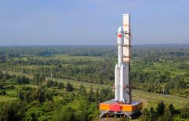
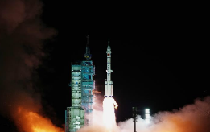
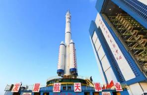
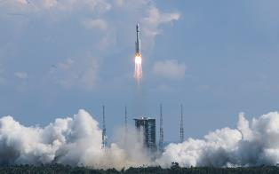

神舟十三号飞船以及用于发射的长征二号F运载火箭正在进行总装测试，载人航天发射场各项检修检 测工作也在有序进行中。
2021年5月18日，中国载人航天工程办公室主任郝淳介绍，神舟十三号载人飞船将于10月份实施飞, 行任务。
2021年6月，神舟十三号载人飞船也已整装待发，具备快速发射和应急救援能力。

1. 总装测试完成续命代发
神舟十三号飞船以及用于发射的长征二号F运载火箭正在进行总装测试，载人航天发射场各项检修检 测工作也在有序进行中。
2021年5月18日，中国载人航天工程办公室主任郝淳介绍，神舟十三号载人飞船将于10月份实施飞, 行任务。
2021年6月，神舟十三号载人飞船也已整装待发，具备快速发射和应急救援能力。

2. 天舟三号货运飞船对接
2021年9月20日，满载货物的天舟三号货运飞船先-步驶入太空,成功对接空间站。
2021年10月7日，神舟十三号载人飞船与长征二号F遥十三运载火箭组合体已转运至发射区。发射场设施设备状态良好，后续将按计划开展发射前的各项功能检查、联合测试等工作。

3. 正式发射升空
北京时间2021年10月15日21时40分，神舟十三号载人飞行任务航天员乘组出征仪式，在酒泉卫星发射中心问天阁广场举行。
2021年10月16日0时23分，搭载神舟十三号载人飞船的长征二号F遥十三运载火箭,在酒泉卫星发射中心点火升空。

1载人飞船将采用自主快速交会对接的方式，首次径向停靠空间站;
2届时中国空间站将实现核心舱、2艘货运飞船、1艘载人飞船共4个飞行器组合运行;
3航天员将首次在轨驻留6个月，这也是空间站运营期间航天员乘组常态化驻留周期;

4中国女航天员将首次进驻中国空间站，航天员王亚平也将会成为中国首位实施出舱活动的女航天员;
5在神舟十二号任务的基础上，进步开展更多的空间科学实验与技术试验，产出高水平科学成果;
6实施任务的飞船、火箭均在发射场直接由应急待命的备份状态转为发射状态。
